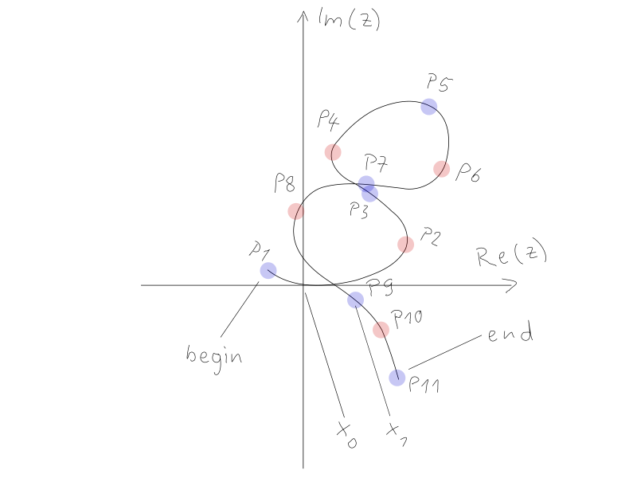

Analyzer¶
Extraction of Feature Points¶
The analyzer then converts the vector graph into a sequence of one Turn, one Corner and one Turn. The sequence - starting with a Turn - has one Corner terminated by a turn and is concatenated into Turn-Corner-Turn-Corner-Turn.
For developer information on how this is done see Analyzer Algorithm
This input can be used to make a matchline overlay comparison (See Comparator) to previously recorded vector graphs.